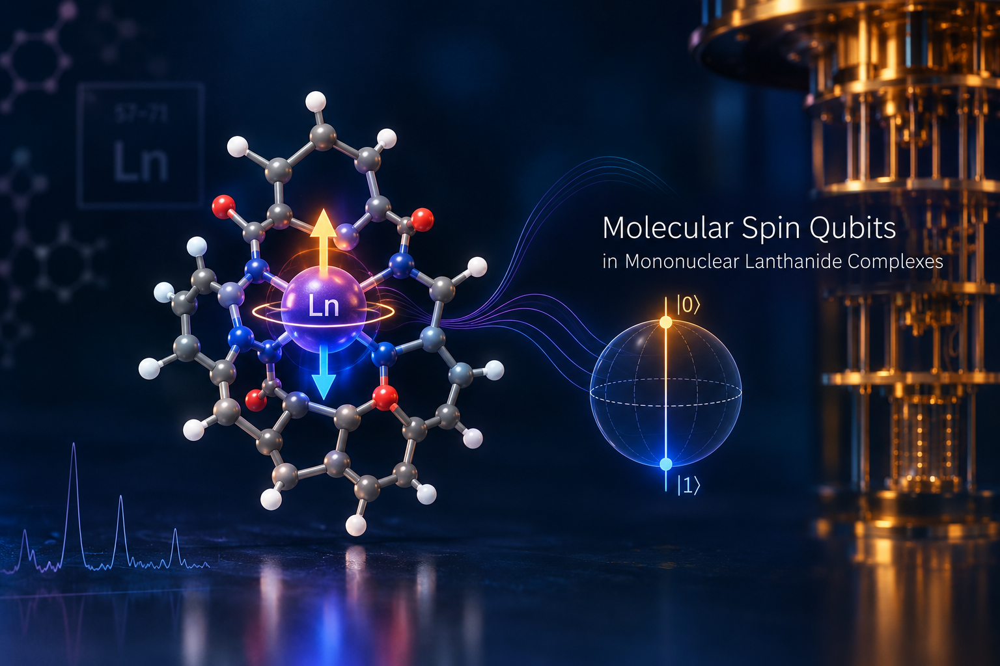
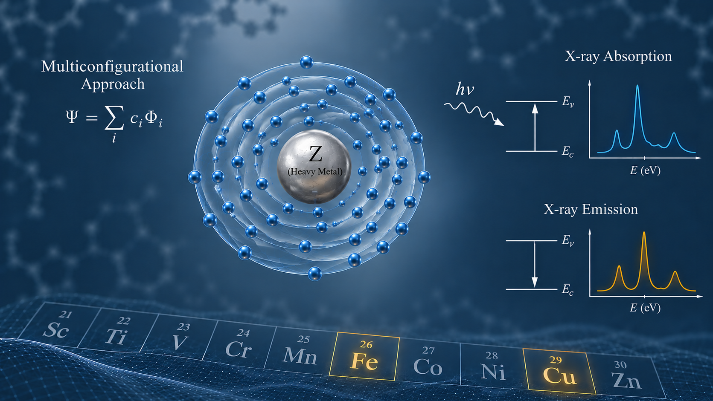
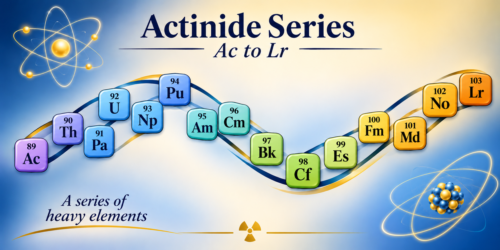
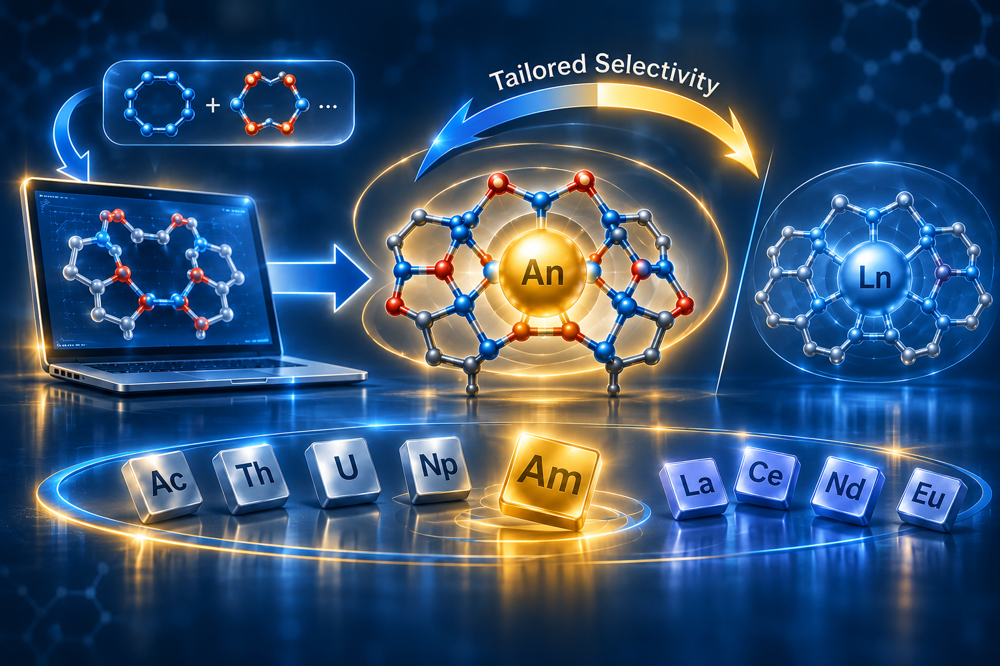
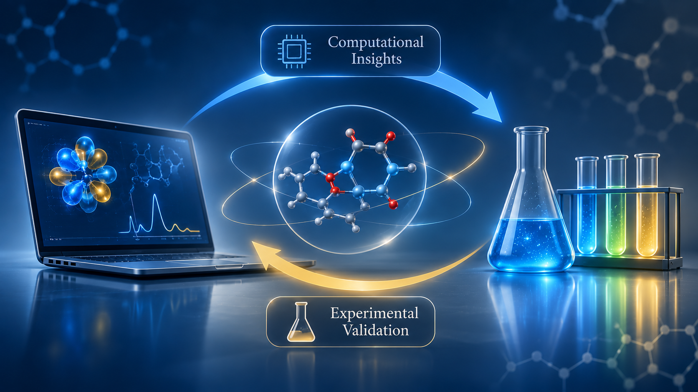

My research explores the coordination chemistry and electronic structure of rare earth metal complexes using computational methods to improve the fundamental understanding of these elements and the computational approaches to handle them. By working on the balance between numerical accuracy and computational efficiency for connecting their chemical properties to molecular structure, my research addresses solutions for heavy-element separations and design rules for excited states useful for magnetic and quantum technologies.
Beyond my core research, I am interested in science education and contribute to collaborative research in catalysis and optoelectronics.
Click any tag to see related blog posts.

Some f-elements behave like tiny magnets whose direction can store a bit of information, or, in a quantum setting, a qubit. Whether that works depends on the exact electronic states of the ion and how its surroundings shape them. Strong spin-orbit coupling and partially filled f shells give rise to large magnetic anisotropy and reduce decoherence in quantum states, which are central to high-density information storage and quantum technologies. I use electronic structure methods to understand and predict this behaviour at the molecular level. With multiconfigurational wavefunction approaches that treat electron correlation, relativistic effects and spin-orbit coupling explicitly, we compute crystal-field splittings, magnetic anisotropy, relaxation barriers and clock transitions, and use them to model magnetic susceptibility and qubit states.
Methods: CASSCF, CASPT2, NEVPT2, Single Anisotropy

X-rays give an element-specific probe of electronic structure and the local chemical environment. While absorption involves the excitation of core electrons into unoccupied states, emission arises from the radiative relaxation of the resulting core hole. I investigate these processes in heavy-element-based systems where their theoretical description is particularly challenging due to strong electron correlation, spin–orbit coupling, relativistic effects and the involvement of multiple electronic configurations. My work uses multiconfigurational wavefunction methods to calculate and interpret metal L-edge and ligand K-edge X-ray absorption spectra of actinide complexes, as well as valence-to-core X-ray emission spectra of transition-metal complexes. By analysing the calculated spectral features in terms of core-excited electronic states, orbital contributions and metal–ligand interactions, I establish connections between spectroscopic signatures and the underlying electronic structure and bonding.
Methods: RASSCF, RASCI, RASPT2, MC-PDFT, Peak Broadening

The actinides sit where textbook periodic-table rules start to bend. Their 5f, 6d and 7s orbitals, relativistic effects and electron correlation mean each element can behave differently from its neighbour. Unlike the more familiar periodic trends across the lighter elements, changes in the electronic structure of actinides can lead to significant variations in their oxidation-state stability, bonding and chemical reactivity. My research investigates these trends through systematic comparisons of actinide complexes in a particular ligand environment, allowing the influence of the metal centre to be examined independently of changes in the coordination environment. Using quantum chemical methods, the computed energetics and electronic properties give information on oxidation-state stability, metal–oxygen bond strengths and metal–ligand covalency across the series. The participation of 5f orbitals in bonding and the changing balance between ionic and covalent interactions provide insights into the electronic origins of actinide periodicity and the factors governing the distinct chemical behaviour of individual actinide elements.
Methods: DFT, NBO, EDA, ETS-NOCV, QTAIM

The separation of minor actinides from spent nuclear fuel is an important challenge in nuclear waste management, particularly because trivalent actinides such as americium and curium exhibit chemical similarities to lanthanides. My research uses quantum chemical methods to investigate the metal-ion selectivity of macrocyclic and acycic ligands and understand the factors governing their coordination preferences. I examine how changes in ligand architecture, donor atoms and functional groups, such as the incorporation of oxygen donors or electron-withdrawing substituents, influence metal–ligand interactions and complex stability. By comparing the binding preferences of different ligands towards competing metal ions, I evaluate their ability to discriminate between actinides and lanthanides. These studies establish relationships between ligand structure, coordination chemistry and metal-ion selectivity, providing molecular-level insights into the design of more selective extractants for actinide separation.
Methods: DFT, NBO, EDA, ETS-NOCV, QTAIM

My collaborative research involves working with experimental groups across different areas of chemistry, using quantum chemical calculations to complement experimental investigations. These collaborations span the study of molecular corrosion inhibitors for steel, fluorescent probes for ATP detection, luminescent molecular systems, and catalytic processes. My computational contributions include computing theoretical descriptors for exprimental observables and analyzing molecular structures, electronic properties, bonding interactions and reaction mechanisms to understand the factors underlying experimentally observed behaviour. By connecting electronic structure with spectroscopic, photophysical, catalytic and coordination properties, these studies provide a molecular-level interpretation of experimental results and help establish structure–property relationships across diverse chemical systems.
Methods: DFT, Hirshfeld surface analysis, reactivity descriptors, NICS
My contributions to chemical education include research on student learning experiences, teaching practices and engagement with chemistry. The COVID-19 brought about a lot of changes to the education system. This motivated my first research publication on the experiences of students during the transition to online learning in 2020. Later, I have worked on perceptions of virtual titration experiments as alternatives to conventional laboratory activities, and student attitudes and efforts towards chemistry entrepreneurship.
Good science depends on careful readers.
Reviewed a book proposal for Routledge.